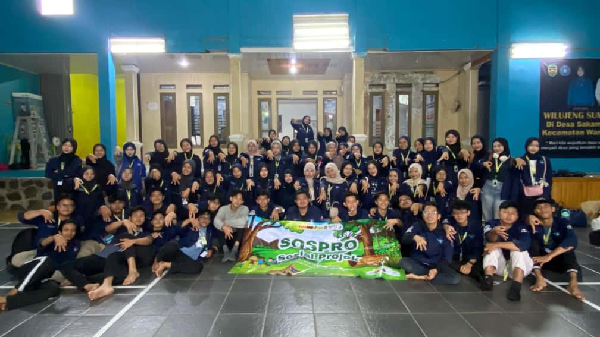

Aktivitas Saya
Kegiatan Pendidikan Latihan Kepemimpinan Mahasiswa yang dilaksanakan di bulan April
PLKM 2025
SOSPRO 2025
Kegiatan Sosial Project yang dilaksanakan di bulan Juni ke Desa Sakambang, Wanayasa.

Kegiatan MIKASI ESTIFEST 2025 yang dilaksanakan dari bulan Juli sampai Agustus, difoto ini pada saat pelaksanaan lomba Band.